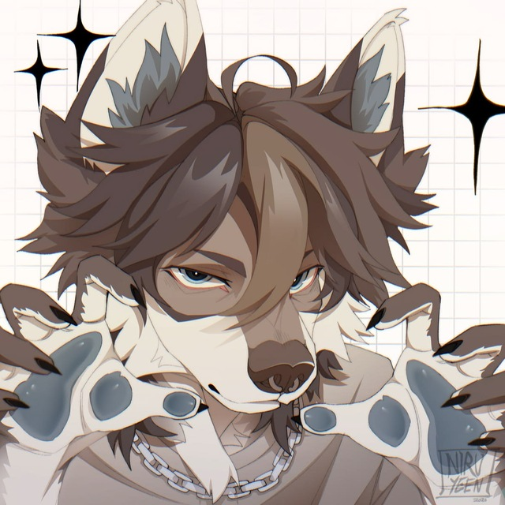

привет, я
Maya Moon.
sorried · она / её
делаю приложения на SwiftUI,
Telegram-ботов и плагины для freshGram.
Челябинская область, Россия · UTC+5
чуть обо мне
пишу нативные приложения для iOS и macOS. ещё делаю модули для юзерботов и плагины для freshGram.
сейчас изучаю Go и Rust, разбираюсь в интерфейсах. общаюсь на русском и английском.
обычно под рукой
- Swift
- Python
- TypeScript
- JavaScript
- Linux
- Docker
библиотеки и инструменты
- приложения
- SwiftUI · FFmpeg
- боты
- Telethon · TgCrypto · grammY
- данные
- SQLite

сделано мной
проекты и плагины
плагины freshGram
репозиторийfoxdropPython / freshGram
случайная лиса в чате
получает случайное фото лисы и отправляет его в открытый чат.
coverdrop в архивеPython / freshGram
обложки музыкальных релизов
ищет обложку по исполнителю и названию трека, затем отправляет выбранную картинку.
приложения
MediaForgeSwift / SwiftUI / FFmpeg
конвертер для macOS
локальная конвертация видео, аудио и изображений. в разработке.
xyecoc-ipaSwift / SwiftUI
почта на iOS
несколько аккаунтов, офлайн-режим и автоматическая сборка .ipa.
боты и расширения
freshupdateTypeScript / grammY
релизы в Telegram
бот, который сообщает о новых версиях freshGram.
disable-shortsJavaScript / Chrome
YouTube без Shorts
расширение скрывает Shorts и Playables. без отслеживания.
на связи
Telegram для общения, GitHub для кода.